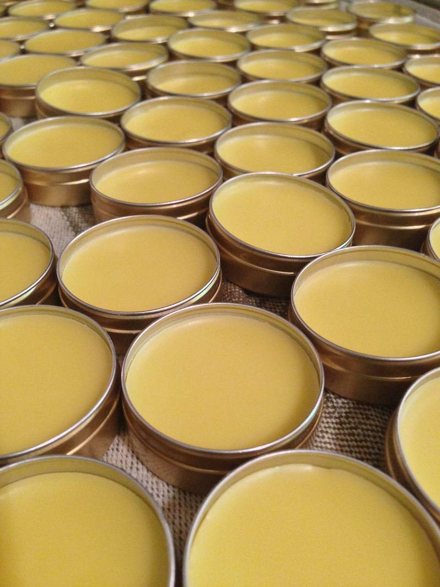

Cire pour Meubles
Notre cire pour meubles à base de cire d'abeille est parfaite pour entretenir et restaurer vos meubles en bois. Elle apporte une brillance naturelle tout en protégeant le bois.
Prix :
- 100 g - 8.99€
- 250 g - 18.99€
- 500 g - 32.99€
Les bougies que nous créons
Nos bougies sont naturelles et parfumées avec notre cire d'abeille de qualité supérieure, faites à la main, elles offrent une combustion propre et une ambiance chaleureuse.
Prix :
- 1 bougie - 10.00€
- 2 bougies - 18.00€
- 3 bougies - 25.00€

Soins de la Peau à la Cire d'Abeille
Prenez soin de votre peau avec nos produits à base de cire d'abeille. Notre crème hydratante et notre baume à lèvres nourrissent et protègent votre peau des éléments.
Prix :
- Crème Hydratante (50 ml) - 12.99€
- Crème Hydratante (100 ml) - 24.99€
- Baume à Lèvres (10 g) - 4.99€